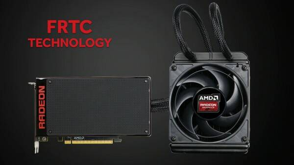
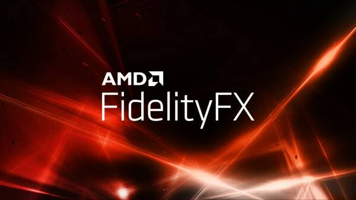
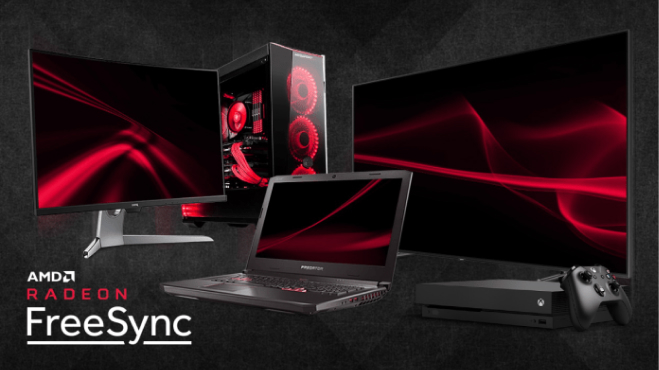
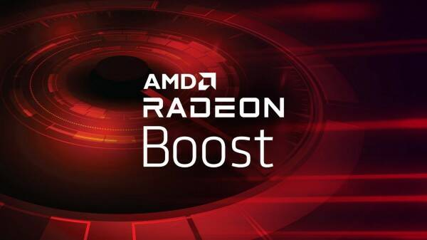

Главная
Продукты
Nvidia
AMD
Новости
Nvidia
AMD
Драйверы
Nvidia
AMD
Производители
Nvidia
AMD
Обратная связь
Новости компании Amd

AMD Управление частотой кадров (FRTC)
Функция, которая позволяет пользователям установить максимальную целевую частоту кадров.
Читать далее >

AMD FidelityFX
Набор инструментов с открытым исходным кодом для повышения качества изображения для разработчиков игр
Читать далее >

Tехнология AMD FreeSync
Устраняет разрывы изображения на экране без каких-либо задержек
Читать далее >

AMD Radeon™ Boost
Ускорьте игру (теперь поддерживается больше игр, чем раньше)
Читать далее >
 Nvidia
Nvidia AMD
AMD